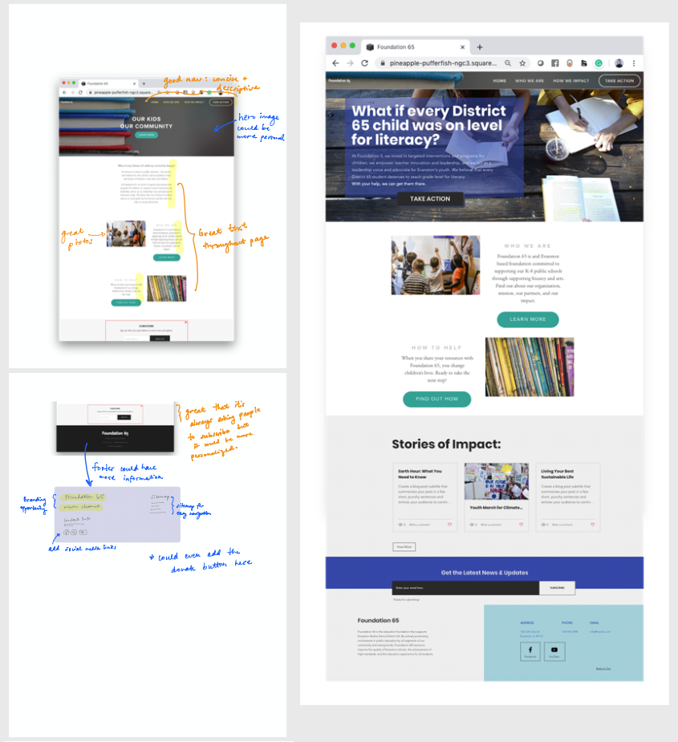
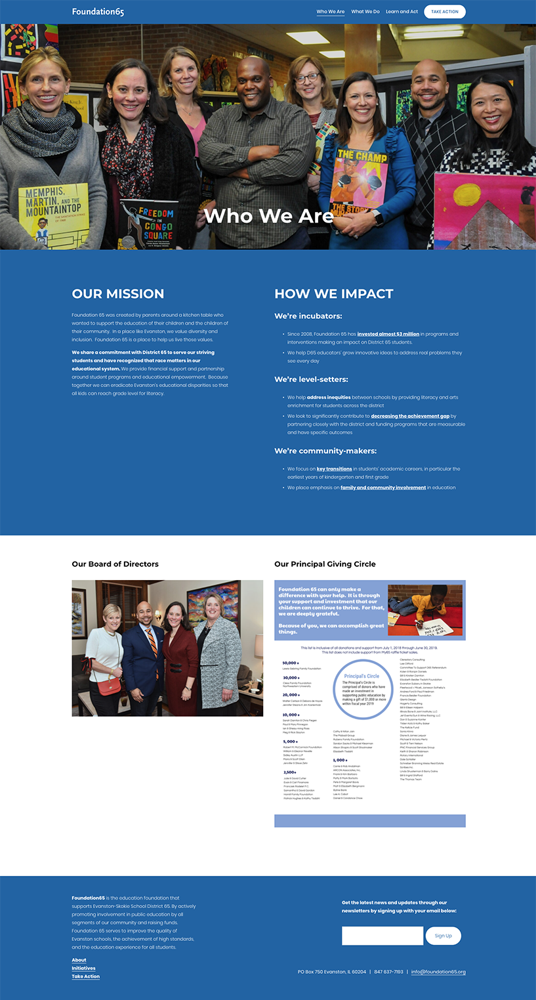
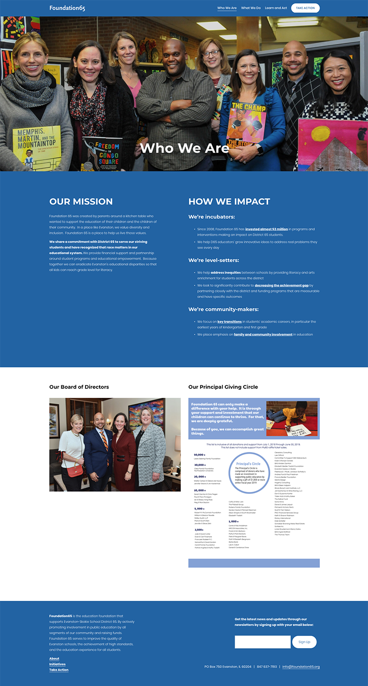

Featured non-profit work:
Foundation65 Website Remake
The non-profit:
Foundation65 is a non-profit educational foundation focused on supporting their local school district, Evanston-Skokie School District 65.
The problem:
A survey of the foundation's past and current donors revealed Foundation65 needed to have clearer, stronger communications regarding their impact. Their current website (hosted on Wordpress) is actually packed with information, but it is hard to navigate so the messaging can get lost.
The goal:
Create a new website (hosted on Squarespace) that will serve as a communications hub for Foundation65's mission and impact.

A side-by-side comparison of the before and after of Foundation65's homepage
Additional Background
The aforementioned survey was conducted by the strategic communications consultant the foundation hired in 2018. In addition to the survey, she also analyzed the donor database and gave a recommendations packet for next steps for the organization.Alecia Wartowski, Foundation65 Executive Director, had actually already made some progress on the website remake on Squarespace by the time I got involved in late November 2019.
My main responsibilities
- Website Design: Establish design guidelines and standards that reflect the foundation's brand
- Content Strategy: Work with Alecia to not just simply migrate the content from the previous site, but to tailor it so that it aligns with the new website's mission to be a communications hub
- Build with Squarespace: Create the easily maintanable pages on Squarespace and provide a brief tutorial for future updates
Tools used
Prototype: Notability (iPad), PhotoshopCode: Custom CSS on Squarespace
Project Status
In progressThe Process
Gathering background
My first order of business is always to understand an organization's current and future desired state. Fortunately for me, most of the questions I would have asked in the initial meetings were answered in the packet created by the strategic communications consultant. I only had to ask Alecia for a few things (like websites she considered to be good inspiration and access to branding materials) before getting started.Initial designs
Alecia had actually started on the Squarespace migration, so I decided to use that as the starting point rather than the current site. I felt it was more appropriate to treat the current site as a resource for content instead, because I figured the new Squarespace website was more aligned to where the foundation wanted to go next.The next order of business is then to screenshot the Squarespace pages and annotate them with my feedback and thoughts. I also created quick mockups of what I think the page should be. I discussed all of this with Alecia in our next meeting.
Establishing design concepts
My first goal was to establish the design concepts that would just be reused throughout the site. I noticed in the current and previous sites that the foundation had a lot of great action photos so I made sure to use those in a variety of ways.My personal favorite is text overlayed on a full-bleed photo, so I'm glad Alecia agreed it looked great for header photos and quote blocks to break up a page.
We also established pretty early that the website will always be text-heavy (they have a lot of information to give). We needed to make them more visually interesting without being distracting, so I suggested color-blocking that matched their signature Pantone 292 blue. (Sidenote: totally geeked out when I found out they used a Pantone color for their branding.)
Continuing the work
As of today, the Homepage and Who We Are pages are finished. The strategy for the remaining pages have also been identified, so I just need to repeat the process above of creating mockups, getting feedback, iterating, and then creating the actual pages on Squarespace.The only change to the process is that now I prototype some pages to Squarespace itself so I can get a feel for how easy/difficult something would be to maintain.
It's important for me to handoff a website that is easy to maintain since Alecia will be its admin; I wanted to make sure she'll be able to quickly update what she needs to, so she can focus on her more important duties as the Executive Director.


On the left is the annotated Homepage and on the right is my initial design proposal for the Homepage.

The current design for the Who We Are page. The Board of Directors subpage is in progress; I'll share it here once it's done!
Footnotes
Work in progress
Because this is pro bono work, the timeline of the project is much more relaxed. (This is especially great for when I have to work on weekends to meet work deadlines.)Alecia and I meet try to week every other week to discuss current progress + next steps. When we can't, we work via email. This project started in late November and is slated to finish in June. I'll be sure to update this page once the new website is live!
Knowing your audience is key
It was really fortunate that Foundation65 had hired a communications consultant, because a lot of the groundwork regarding audience research and content strategy were already done and ready for me to just read.The recommendations packet was a really great reference point for the design and content decisions Alecia and I have been making.
First time using Squarespace
The experience has been pretty good so far! I want to highlight the blog feature because it is surprisingly robust and versatile.Foundation65 doesn't have plans for a blog, but we've been able to leverage it as a way to create profile pages for Board Members, as well as quick landing pages for their various initiatives.